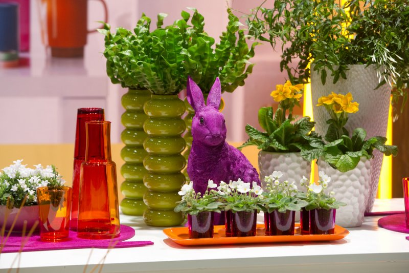
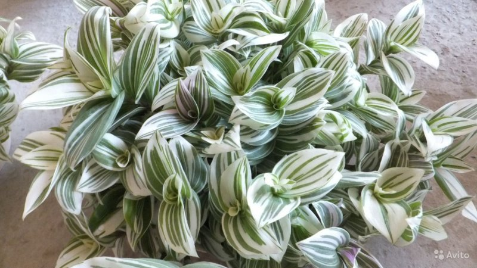
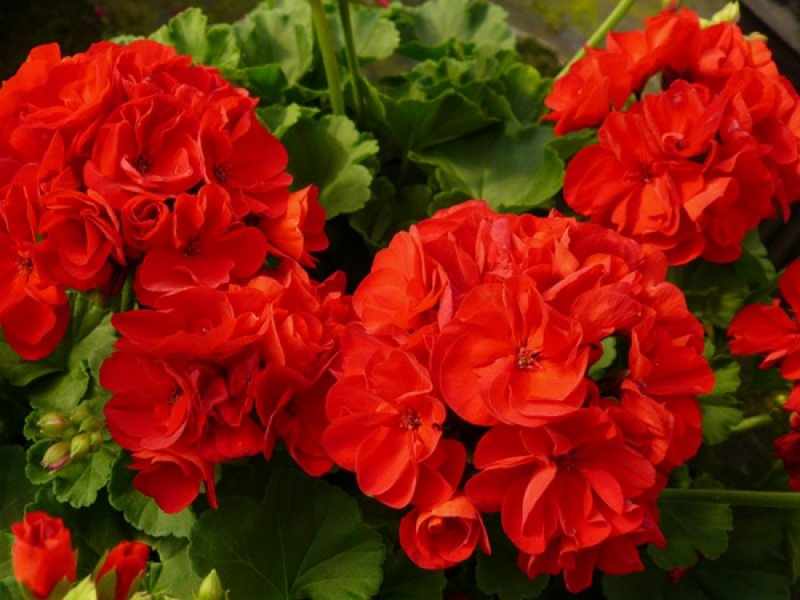
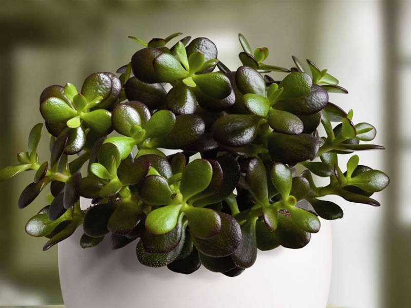
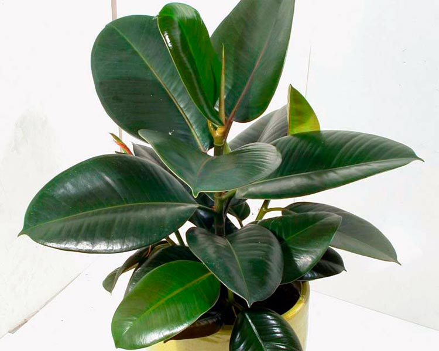
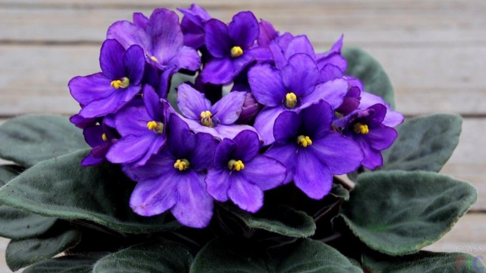

Surprising facts about houseplants
Surprisingly, but true: indoor plants can affect our health and mental state. These cute creatures can be both wonderful friends and secret detractors entrenched in our immediate vicinity. From the point of view of the ancient Chinese teachings of Feng Shui, flowers carry a certain energy, which directly affects the health and well-being of a person.
-
Tradescantia is a kind of indicator that reveals unfavorable places in a home. She is ready to sacrifice herself, clearing the surrounding space of negativity and envy, while turning yellow and shedding leaves. Move the flower to another place, and at the same time check whether the resting places are located correctly in the house.
 -
Geranium also has a strong aura, and for lush flowering, it absorbs negative energy, creating protection from the evil eye. And its beneficial properties have long been used in the treatment of neurosis, poor sleep, and colds. But sleeping in a room where geraniums grow is not advised: the evaporation of essential oils will give you a headache.
 -
It is customary to start a fat woman or “money tree” to attract the energy of well-being into the house. The plant not only helps to solve the problems of the material plane, but also alleviates the difficult state of mind associated with money. It will also be useful in that it will give strength and increase industriousness.
 -
Aloe or agave is recommended to have in homes where the owners often get sick. This plant is called a real home first aid kit. Possessing unique properties to provide first aid for many diseases, aloe also cleanses and strengthens the energy of housing. To calm the excitement, it is enough to sit next to this flower. It protects the owners from other people's evil thoughts and troubles.
-
Ficus cleanses the home of anxieties and fears. This cozy plant will contribute to well-being in the family, harmony between husband and wife, attract prosperity and peace of mind to the house.
 -
Violet will help to establish personal life. Just don't forget to put it on the windowsill in the bedroom. The flower protects its owners from misfortunes. Lonely gives warmth, helps to cope with stress, and even helps to eradicate bad habits, such as excessive appetite.
